原文连接:https://www.cnblogs.com/wdsunny/p/12058615.html
1 引言
为了了解当前前端的发展趋势，让我们从国内各大互联网大厂开始，了解他们的最新动态和未来规划。这是解密大厂前端技术体系的第四篇，前三篇已经讲述了阿里、腾讯、百度在前端技术这几年的技术发展。
这一篇从携程讲起。
携程技术全景图
移动技术产品
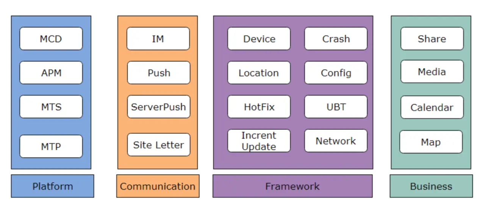
移动技术产品分为四大模块：
- 技术平台：MCD（持续交付平台），APM（性能监控平台），MTS（日志排障平台）和MTP（无线技术平台）
- 通信层：通信工具，消息推送平台，服务端推送
- 框架层：涵盖App中通用能力，例如设备信息、位置信息、热更新、网络通信、配置、用户行为埋点等等
- 业务层：通用的业务组件，例如分享功能、多媒体、日历、地图等等
大前端技术框架
携程在大前端技术框架层面主要面向不同应用场景沉淀了三个技术框架：
- CRN框架：Ctrip React Native，基于RN定制化的框架，并且完善了周边的打包、部署、监控等等能力
- Node平台：Node服务的框架，涵盖从编码、编译、发布、监控全流程
- Hybrid平台：用于App内Hybrid WebView框架
新技术探索
- 新技术：HTTP/2，VOIP
- 新产品：小程序、快应用、VR/AR
MCD - 持续交付平台
MCD经历了多次大型迭代，逐步成为携程内部持续交付平台，涵盖了集成阶段、测试阶段、发布阶段和运营阶段的全流程研发环节。
MCD 1.0
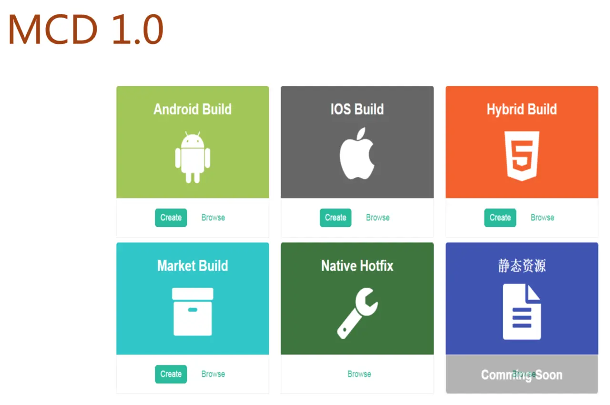
MCD1.0的出现解决了系统在线打包的问题，并且通过CI/CD实现定时打包、代码静态扫描、自动化验包-白屏监测的能力。
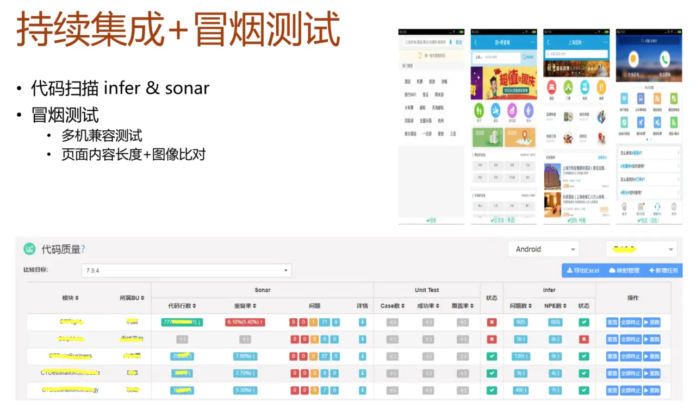
持续集成阶段接入了代码扫描和冒烟测试的功能，通过infer和sonar进行代码的静态检查，并且统一集成单元测试能力，提供单测的结果和覆盖率。
冒烟测试可以监测白屏情况，并且进行多机型兼容测试，通过内容和图像对比提前发现问题。
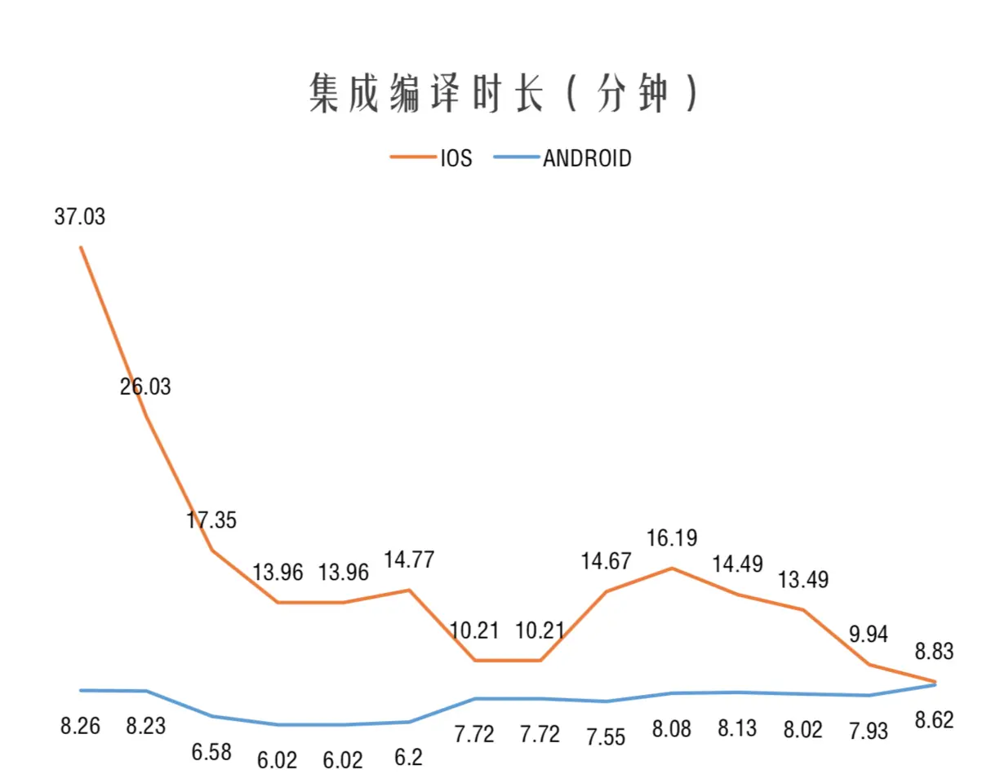
通过集成编译，持续减低App编译的时长，提高研发测试效率。
MCD 2.0
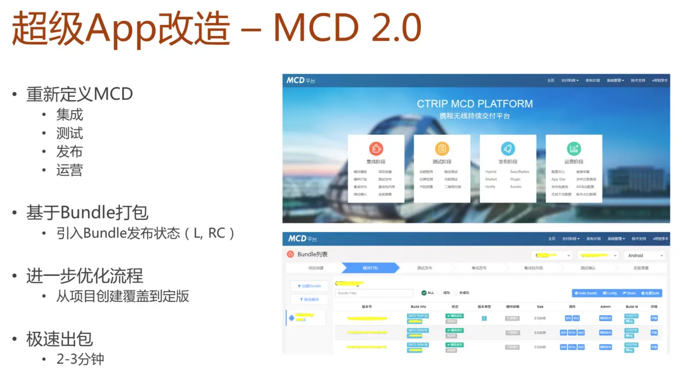
MCD 2.0重新定义了MCD，涵盖了更为广泛的范围，包含集成、测试、发布、运营环节。并且由各个模块各自打包生成Bundle，再通过Bundle集成达到2~3分钟极速出包的能力。
同时MCD也增强了许多能力：
- 发布升级：对于Hotfix、Bundle、Hybrid/RN等内容实现动态下发，实现白名单、灰度发布能力，通过差分方式提高下载效率，并且提供大盘实时查看下发情况。
- 配置中心：支持按照平台、版本、渠道、ABTest等不同维度下发配置信息，实现App配置信息管理能力。
- 崩溃收集：App Crash/JS Error的收集，并且支持实时告警，多维度搜索，代码反查等能力。
- App Size管理：基于业务模块进行App包大小管理
APM - 性能监控平台
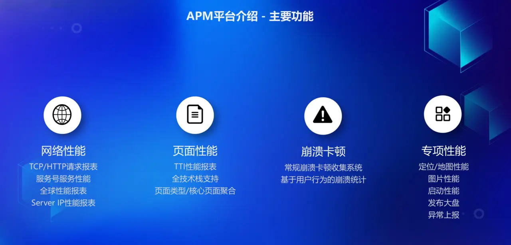
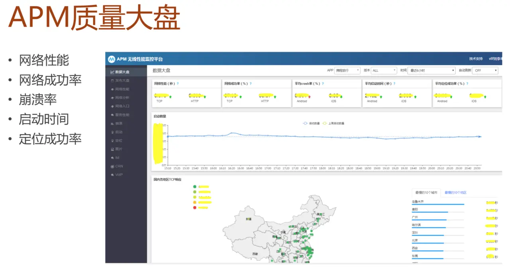
APM性能监控平台主要关注性能、崩溃、异常等数据的监控，携程在性能与异常监控上也做了许多工作：
- 网络性能：收敛了网络通信SDK，统一了三端的网络通信底层能力，网络SDK可以统一管理IP池、链路池、请求池，达到性能最优化。并且可以监控在网络请求全链路中的错误情况，实现业务场景联通成功率99%。
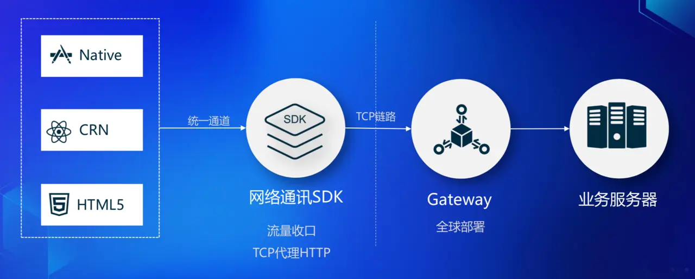
- 页面性能：在页面性能统计口径上采用TTI，通过遍历检测页面文本的变化来判断是否到达TTI。根据不同的页面形态，制定了不同的性能指标。
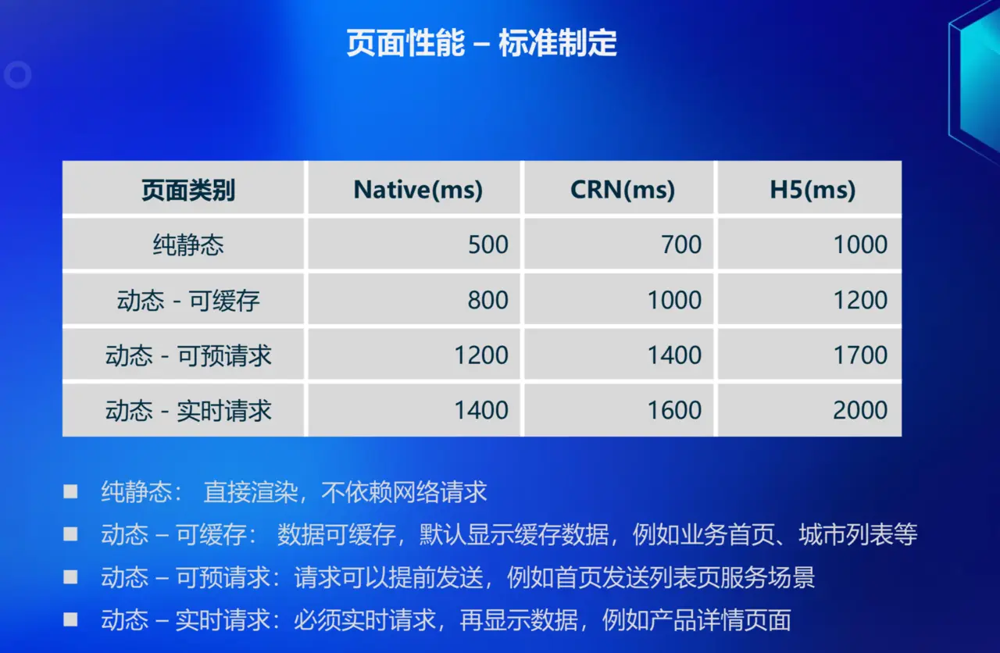
- 异常处理：收集异常卡顿的情况并且自动归属到不同业务团队，崩溃信息收集可以固化下来用户的操作路径和相关信息。
MTS - 日志排障平台
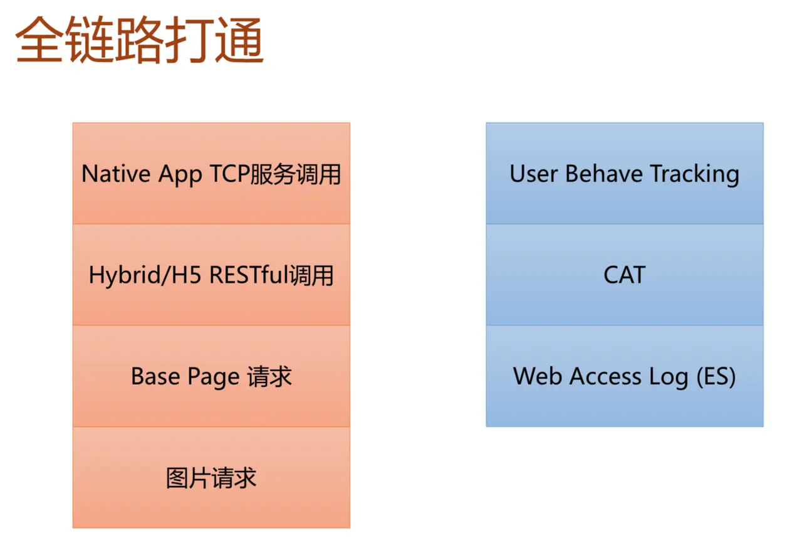
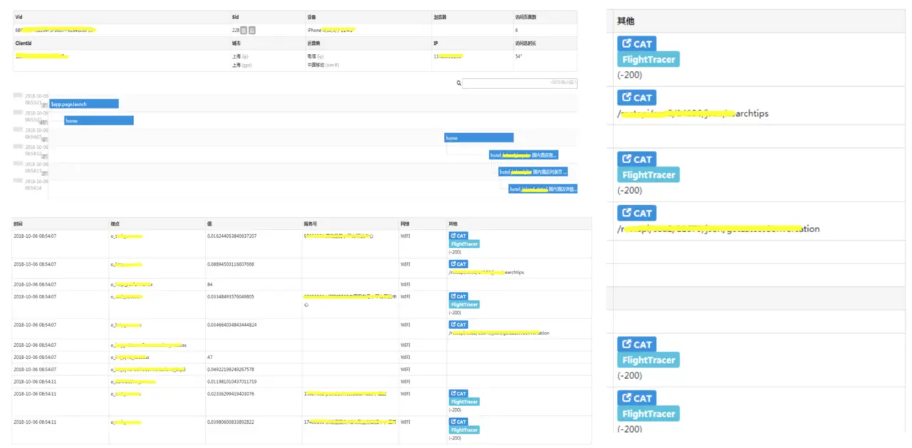
收集App中所有相关数据，例如网络请求、页面跳转、图片请求、用户行为埋点、Cat日志、Web服务日志，并且通过时间轴将所有数据串联起来，可以帮助研发同学快速还原现场排查问题。
在日志展示上以一次用户session为集合，按照时间轴显示不同的页面信息，同时在每个页面的详细信息中会提供当前页面所有的网络请求、用户行为埋点、研发自主埋点等等内容。
MTP - 无线技术平台
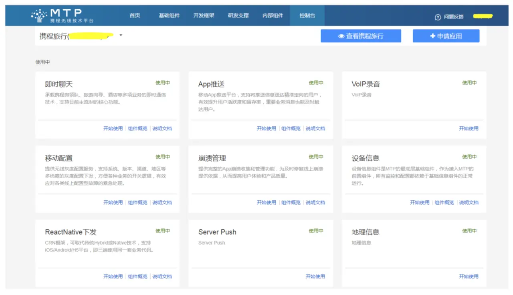
打造无线技术平台，将App中通用能力沉淀下来，并且复用到多个App中，避免重复造轮子，提高研发标准化与效率。同时平台治理提供例如注册服务、排查故障、服务熔断、查看调用等功能，方便平台化技术的运营。
CRN - Ctrip React Native
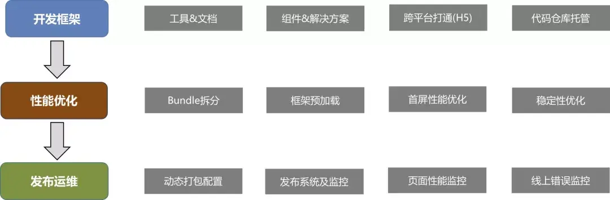
CRN是携程内部基于React Native进行深度定制的移动端跨平台/动态化框架，目前已经在实际的业务项目中大规模应用，页面规模超过100个，PV数目已经超过传统Hybrid H5页面的2倍多。
基于React Native框架优化，定制成适合携程业务的跨平台开发框架 - CRN，提供从开发、发布、运维的全生命周期支持。
-
开发框架，主要是提供在开发阶段的支持。包括工具&文档、组件和解决方案、跨平台打通和代码托管功能。 工具主要包括CLI和Packer，文档包括API文档和设计文档，跨平台主要是抹平平台差异组件间的API，代码托管是为了方便业务团队，特别是新加入CRN开发的团队，可以参考已有业务代码快速上手。
-
性能优化，主要是为了解决首屏渲染的性能问题和RN框架的稳定性问题。为了解决首屏渲染性能问题，我们先后开发了框架拆分和预加载、业务按需加载、业务预加载和渐进式渲染方案，稍后会就这些方案做详细介绍。
-
发布运维，主要是提供发布系统和性能、错误监控平台，让业务开发同事能够有完备的系统去发现和解决线上问题。
详细信息可以查看：干货 | 近万字长文详述携程大规模应用RN的工程化实践
Node平台
携程在2017年9月份正式上线了Node.js应用，历经2年时间，应用数实现了8倍增长，覆盖公司33个业务部门。
Node.js的工程化建设，涵盖开发、构建、测试、发布、运维各个环节：
- 开发：根据业务场景提供不同的脚手架工程（SSR、DA Service、Desktop Application），提供核心中间件、数据Mock平台、Docker化的开发环境。
- 构建：安装依赖包，检查依赖包版本，构建目标文件，同时提供代码静态扫描，安全扫描的能力。
- 测试：提供自动化测试，集成测试，灰度测试和压力测试
- 发布：提供携程云和公有云发布能力，灰度发布和回滚能力，实现内部npm包开发发布流程与Git高度集成
- 运维：日志监控和应用排障的能力
详细信息可以查看：干货 | 浅谈Node.js在携程的应用
GraphQL-BFF
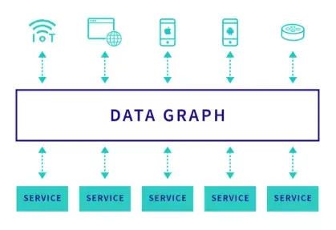
GraphQL-BFF 的核心思路是，将多个 services 整合成一个中心化 data graph。
每个 service 的数据结构契约，都放入了一个大而全的 GraphQL Schema 里；如果不做任何模块化和解耦，开发体验将会非常糟糕。每个团队成员，都去修改同一份 Schema 文件。
这明显是不合理的。GraphQL-BFF 的开发模式，应该跟 service 的领域模型，有一一对应的关系。然后通过某种形式，多个 services 自然整合到一起。
技术选型上，开发语言选用了 TypeScript，跑在 Node.js v10.x 版本上，服务端框架是 Koa v2.x 版本，使用 apollo-server-koa 模块去运行 GraphQL 服务。
Apollo-GraphQL 是 Node.js 社区里，比较知名和成熟的 GraphQL 框架。做了很多的细节工作，也有一些相对前沿的探索，比如 Apollo Federation 架构等。
详细信息可以查看：干货 | 万字长文全面解析GraphQL，携程微服务背景下的前后端数据交互方案
写在最后
携程在组织架构上有基础研发团队进行保障，在大前端领域能够收敛、沉淀众多的基础平台服务、技术框架，形成了一套比较完整、统一的基础框架能力，很好的支撑了多App、多业务的快速发展。
本篇文章力图从大前端各个方面去整理总结携程当前的技术体系，但一定会有许多遗漏，同时开放信息毕竟有限，希望相关同学可以一起多多交流。
这是大厂前端技术体系解密系列第四篇，后续还会有其他大厂的内容，精彩还将继续，有兴趣的同学可以关注本公众号【奶爸码农】第一时间获得信息。
推荐阅读

『奶爸码农』从事互联网研发工作10+年，经历IBM、SAP、陆金所、携程等国内外IT公司，目前在美团负责餐饮相关大前端技术团队，定期分享关于大前端技术、投资理财、个人成长的思考与总结。